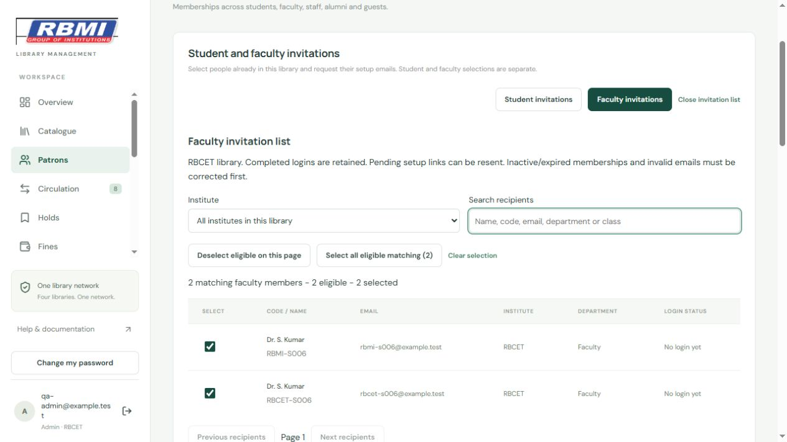

Open Patrons and choose Student invitations or Faculty invitations. These lists are separate and use the selected library.
New accounts receive a setup invitation; pending setup emails can be resent. Completed accounts retain their passwords. Inactive/expired memberships and invalid emails must be corrected before selection.
Requested does not mean delivered. SMTP and Supabase email limits apply. A provider throttle or service failure pauses the queue without automatic retries. Queues are not saved after closing the screen. No email is sent merely by viewing or selecting rows.
Only administrators and assigned librarians can use this screen. The existing Android app loads it automatically; no new APK is needed.
Sample accounts only. Selecting people does not send email until the review checkbox and Send action are used.
